Tato metoda pomáhá, abyste sházeli 15 kg týdně, RYCHLE A BEZPEČNĚ
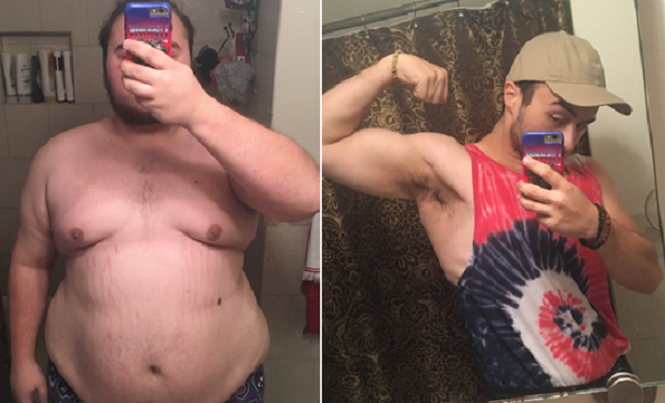Zdravím všechny! Zase je s vámi Branimir Popović, jako i obvyklé. Podařilo se mi zhubnout díky skoro neznámému způsobu a je docela možné, že tento příspěvek brzy bude smazán. Tato nová metoda je opravdovým objevem ve výživě. Mnozí dietologové ji zoufale zkoušeli zamlčet, neboť by jim její objev přinesl hodně potíží. Ztratil jsem hodně času a peněz rápící se různými dietami a cvičením s osobním fitness trenérem. Nic z toho mi ale nepomohlo. Našel jsem jiné řešení, které se dokázalo jako jednoduché a dostupné až tolik, že je těžké tomu věřit. Teď chci prozradit tajemství všem, kteří mají problémy s nadváhou a zdravím.
Toto je můj příběh:
Vždy jsem rád jedl a proto jsem tlustý ještě od dětství. Nejvíc mi chutnalo rychlé občerstvení dokud jsem se díval na televizi po práci. Moje manželka to nikdy nedělala i když proti tomu nic neměla. Viděli jsme ale, že mé tělo urychleně narůstá, obzvlášť v oblasti břicha. Teprve v tu chvíli jsem pochopil, že jsem až moc tlustý a že vypadám jako velké, tlusté prase. Ve věku 33 let jsem vážil 125 kg což bylo o 46 kg víc než by byla normální váha pro mou výšku.
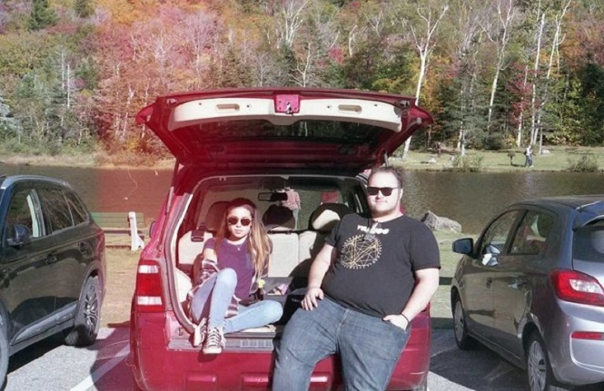Kromě toho jsem měl různé zdravotní problémy. Trpěl jsem strašné bolesti v oblasti pankreasu. Začal jsem neustále cítit únavu, nadměrně jsem se potil a těžko jsem dýchal. Nejhorší bylo to, že jsem se stal impotentním. Budu upřímný, mé obrovské břicho přede mnou schovávalo mé „mužství“ dlouhou dobu. Impotence ovlivnila také můj rodinný život. S manželkou jsme se začali často hádat. Nedařilo se mi uspokojit manželku, což byla velká rána pro mou sebejistotu. Sebe jsem nenáviděl a cítil jsem se jako skutečný lúzr.
Šel jsem na lékařskou prohlídku do nemocnice a výsledky byly katastrofální. Mé tělo bylo ve vážném nebezpečí onemocnět cukrovkou. Dlouholeté rychlé stravování zničilo mé tělo, zvlášť pankreas.
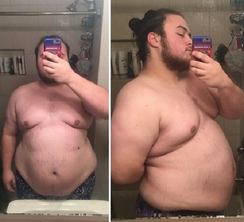Začal jsem s přísnou dietou. Když celý život jíte všechno, co vám chutná, dieta může být vekou psychickou torturou. Každý týden jsem stoupal na váhy doufající, že mé trápení nebylo marné. Váhy ale stále ukazovaly 125,9 kg.
Po třech měsících jsem se rozhodl k dietě přidat i cvičení a začal jsem chodit do posilovny. Trenér mi řekl, že moje váha začne klesat teprve po 6 měsících, protože jsem nesměl namáhavě cvičit. Proto jsem dělal jen jednoduchá cvičení jako je třeba chůze na páse, lehká jízda na kole, dřepy a skákání. Bylo mi ale těžko udělat dokonce i 10 dřepů. Vždy jsem byl zadýchán a cítil jsem závratě. Ostatní v posilovně se mi smáli. Souhlasím, že je směšné když velký, tlustý idiot lapá po dechu a zpotí se dokud dělá cvičení, které každý důchodce může udělat.
Byly to nejtěžší chvíle v mém životě. Neustále jsem měl hlad. Dokonce se mi jídlo i zdálo. Byl jsem neustále nervózní. Možná bych se cítil lépe, kdybych měl podporu své manželky, ale šel jsem jí na nervy. Pořád jsme se hádali a říkala mi hrozné věci. Říkala mi, že jsem "tlustá spodina", "lúzr" i govorila mi: "Nikdy mě nebudeš schopný uspokojit". Bylo to hrozné. Má vlastní manželka mi nevěřila. Brzy mě nechala kvůli jinému chlapovi a požádala o rozvod.
Potom jsem se snažil přísně dodržovat diety a co je možné víc cvičit v posilovně. Ale po měsíci váhy stále ukazovaly 125 kg a vzdal jsem se diety. Znovu jsem začal jíst rychlé občerstvéní se stejnou chutí jako předtím.
Tehdy se mi vůbec nechtělo žít. Nebýt mého kamaráda Ondřeje spáchal bych sebevraždu. Ten mě zachránil. Přestěhoval jsem se k němu, abych snadněji zvládl depresi. Řekl jsem mu všechno, co jsem dlouho držel v sobě. Styděl jsem se za to, že jsem dospělý člověk, který brečí a kňučí jako nějaká holčička. Ale bylo mi neuvěřitelně těžko s tím žít. Ondřej soucítil se mnou. Pečlivě mě poslechnul a řekl: „Proč jsi mi to neřekl dřív? Existuje mnohem jednodušší způsob hubnutí, který je rychlý a bezpečný. Tady máš řešení všech tvých problémů. Já ho používám dlouho a opravdu pomáhá." Když mi to řekl, podal mi malou krabičku s nadpisem . Řekl, že se jedná i přírodní přípravek na hubnutí a zlepšení metabolismu.
Bylo mi těžko tomu věřit, ale nakonec jsem věřit začal! Ondřej vždy jedl hodně rychlého občerstvení a jiné nezdravé věcí, ale vždy byl pohledný a zdravý. Začal jsem vyhledávat na internetu a hledat další informace o přípravku -u a začal jsem ho používat podle návodu k použití. Užívejte 1 kapsli perorálně 1–2 krát denně 30 minut před jídlem.
Můj výsledek:
Po jednom týdnu používání přípravku moje váha byla stejná, ale začal jsem se cítit mnohem lépe. Měl jsem víc síly a energie. Po 14 dní sem byl v šoku. Zhubl jsem 9,3 kg navzdory faktu, že jsem jedl všechno, co jsem chtěl! Zhubl jsem jednoduše, bez zříkání se! Bylo to neuvěřitelné!
Po dalších 7 dní se mi podařilo zhubnout ještě 8,5 kg! Moje váha se doslovně topila rychle a snadno v průběhu 2,5 měsíců.
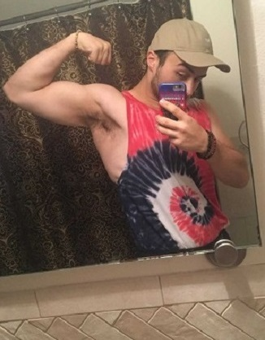Každý další den jsem cítil víc energie a část v oblasti pankreasu mě přestala bolet. Také jsem se zbavil impotence. Když se mé tělo detoxikovalo, má erekce se stala silnější a delší (průměrná doba trvání mého pohlavního styku je teď 40-60 minut). Kromě toho, ženy si mě začaly všímat.. Opravnu neuvěřitelné! Najednou mě vyhledala i bývalá manželka a chtěla, abychom se smířili. Omlouvala se, ale mě na ni už nezáleželo.
Teď chci stručně popsat jak působí - Extrakt z ovoce Garcinia cambogia, Extrakt z hlízy glukomannanu, L - Karnitin, Extrakt z listů Gymnema Sylvester dělají všechno, což je potřebné, abyste měli štíhlé a zdravé tělo.
- Snižují sacharidy, které absorbovala trávicí soustava, čímž se snižuje množství škodlivých látek v krve. Tak můžete jíst všechno, co chcete a škodlivé látky se do vaše krve nedostanou;;
- Tyto složky usnadňují výrobu adipodektinu, hormonu díky kterému přichází ke spalování tuků v těle;
- Normalizují hladinu cholesterolu a cukru v krvi;
- Čistí toxiny.
Sám jsem se přesvědčil o všem když jsem šel na objednanou lékařskou prohlídku a zjistil, že jsem úplně zdráv. Sliby výrobce byly pravdivé. Hladina cukru a cholesterolu v krvi byly normální a jedl jsem všechno, co jsem chtěl a kolik jsem chtěl. Myslím si, že si každý muž to přeje..
Během 3 měsíců používání přípravku podařilo se mi zhubnout 45 kg a teď vážím 79 kg.
Tento výrobek nevytváří závislost. Udělal jsem velkou pauzu od té doby, co jsem ho bral a stále se dobře cítím. Kromě toho, kila, která jsem shodil se už nikdy nevrátila. Teď je moje váha stabilní a neustále vážím 79 kg.
Tady je odkaz na oficiální stránku přípravku pro všechny, kteří chtějí zhubnout rychle a snadno jako já. Berte i a zlepšete si své zdraví a kvalitu života. Tento výrobek je výjimečně levný ve srovnání s neuvěřitelnými výsledky, které dostanete na oplátku. PROSÍM VÁS, MĚJTE NA VĚDOMÍ to, že je tohle jediná webová stránka, na které si můžete objednat originální přípravek. Další stránky prodávají výrobky, které se vyrábí v Číně a nejsou efektivní. Je hodně takových webových stránek. Když jsem si objednával na oficiální webové stránce, nic mi nezpoplatnili! Zaplatil jsem teprve když jsem výrobek dostal. Také, chci dodat i to že je dodávka rychlá. Výrobek mi přinesli už následujícího dne.
neuvěřitelným způsobem zlepšil můj život. Jsem spokojený s tím jak vypadám, jsem zdravý a úžívám si pozornosti žen. Musel jsem se podílet o svou zkušenost s vámi. Přestaňte se trápit dietami! Postarejte se o sebe! Hodně štěstí!
Přestaňte snít o dokonalé postavě! Mějte dokonalou postavu!
Tady jsou odpovědi na otázky, které dostávám každodenně prostřednictvím sociálních sítí:
Máš strie?
Ne,
neponechává žádné strie díky extrakt z hlízy glukomannanu, kterou obsahuje.
Co se děje s kůží? Může se rychle napnout a upevnit?
Ano! Z lidí, které znám a kteří brali
,
nikdo už nemá problémy se striemi a celulitidou!
Co bych měla jíst? Jakou dietu dodržovat?
Jak už jsem řekl, jsem proti všem dietám - a doopravdy, žádné diety
potřebovat nebudete, pokud budete pravidelně brát .
Je pravda, že bychom nesměli jíst po 18 hod. pokud chceme zhubnout?
Je to stereotyp! Máte jíst pokaždé, když máte hlad! Samozřejmě,
pro vaše zdraví a metabolismus je lépe jíst v menších dávkách 4-5 krát
denně.
Ahoj, ahoj! Mám skvělou zprávu! Kontaktoval mě zástupce společnosti "" a nabídl mi 50% slevu pro prvních 100 návštěvníků mého blogu, kteří si ho objednají tady!
Zdravím. Dostal jsem balíček s přípravkem za 3 dny. Můj kamarád to obdržel během dne.
Díval jsem se na televizi a viděl jsem jak známí doktoři mluví o tomto přípravku. Říkají, že je v 98% případů nadváha zapříčiněná poruchami endokrinního systému, vysokou hladinou cukru a cholesterolu v krvi a pomalým metabolismem.. Zdá se, že jsou příběhy o efektivitě tohoto přípravku pravdivé.
Je mi 50 let a zoufale jsem chtěla zhubnout. Pochopila jsem, že se mi to těžko podaří v mém věku, ale snažila jsem se. Objednala jsem si . Znovu jsem si ho objednala jen po několika týdnech, neboť mě efekty tak pozitivně překvapily! Zhubla jsem 6 kg!!! Samozřejmě, jedla jsem zdravě a snažila jsem se cvičit, ale každopádně jsem nečekala takové výsledky. Děkuji Vám za článek. Všem doporučuji . 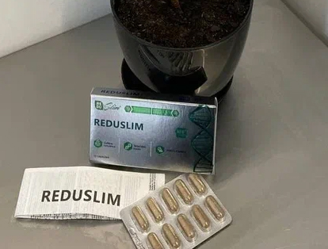
Všechno je absolutní pravda! Používala jsem tento přípravek před rokem a zhubla jsem 29 kg za měsíc! Hubla jsem každý den! Uplynul rok od té doby a moje váha je stále stejná! Vážím 56 kg! 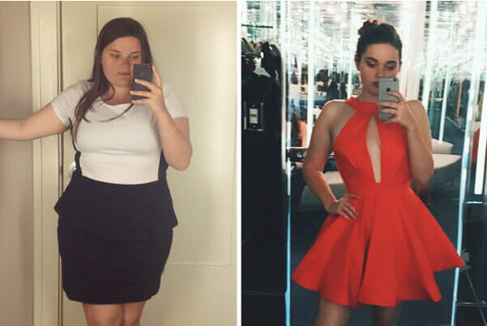
Objednal jsem si na oficiální webové stránce. Dodávka je rychlá, trvalo to jen 2 dny. Trenér mi to doporučil. Výsledky jsou neuvěřitelné! Zhubl jsem 31 kg za 2,5 měsíce. 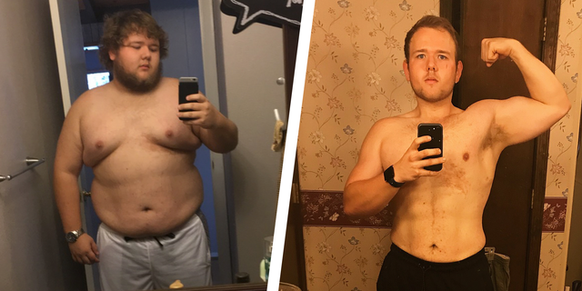
 Dražo
Dražo
Časem jsem dostal břicho. 3 roky v posilovně jsem se snažil zbavit se ho, ale bez žádných výsledků. Manželka mě přemluvila zkusit to s přípravkem . Nebudete tomu věřit, za měsíc jsem se úplně zbavil břicha!
Nevím jak jsou na tom ostatní, ale pro mě je dokonalý. Můžu se pochlubit zhubnutím 32 kg za měsíc a půl. A pokračuji dále ;) 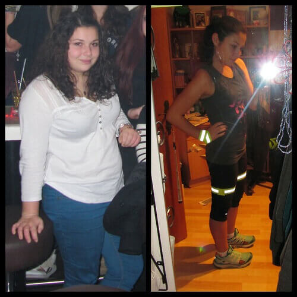
e neuvěřitelný pocit když si něco přeješ a myslíš si, jak to není možné a stane se zázrak. Už jsem zhubla 10 kg a pokračuji v hubnutí stejným tempem. Kamarádky jsou nadšené. Myslí si, že dodržuji přísnou dietu a jsou ustarané. Ještě jsem jim nic neprozradila. Ať hádají :)))
Celého života se zabývám zemědělstvím. Je to těžká fyzická práce, která vyžaduje hodně energie, tak i výživa byla přizpůsobená těmto podmínkám. Ale přece jen se někdy i přehání, takže se i mi podařilo přibrat přes každou míru. Samozřejmě v mém věku to především představuje zdravotní problém. mi poprvé objednal syn, který pracuje a bydlí v Sarajevu. Tyto prášky mi pomohly dát do pořádku svou stravu a potom se zbavit 30 kilogramů! Ze všeho je nejdůležitější to, že necítím hlad od té doby, co jsem začal používat tyto prášky. Dříve mi nový režim výživy nestačil a nebylo možné dodržovat předepsanou dietu. Teď je to snadné! Všem, kteří trpí nadváhou doporučuji bez ohledu a pohlaví a věk! 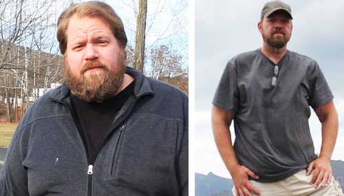
Ahoj, Branimire. Používala jsem a zhubla 13 kg za měsíc. Jeden rok potom, moje váha je pořád stejná! Tady je moje fotka: 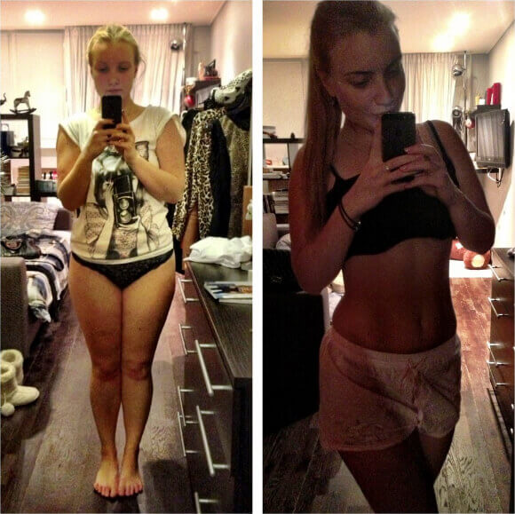
Lidičky, může mi někdo říct, kde si to můžu koupit? Neprodává se v lékárnách a nechtěla bych si koupit nějakou kopii přípravku.
Ahoj, Anđelijo. Chtěl bych ještě jednou připomenout, že se dá koupit JEN na oficiální stránce výrobce. Výrobce zajistil speciální slevu všem našim čtenářům. Mimo jiné sleva brzy vyprší, takže se pospěšte a objednejte si ho! Prosím Vás, dávejte pozor na falešné přípravky.
, koupil jsem si ho tady za velmi příznivou cenu. Působí výborně! Cítím se skvělé a mám dlouhou erekci, pevnou jako kámen. Kromě toho jsem, zhubl 26 kg. Skvělý bonus! 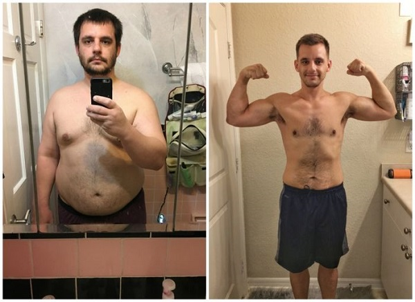